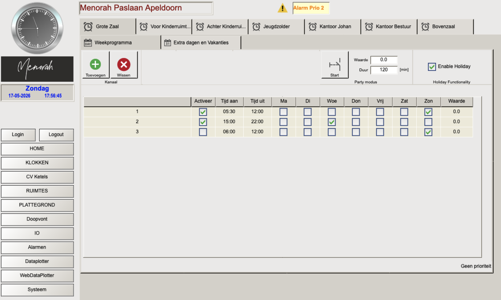
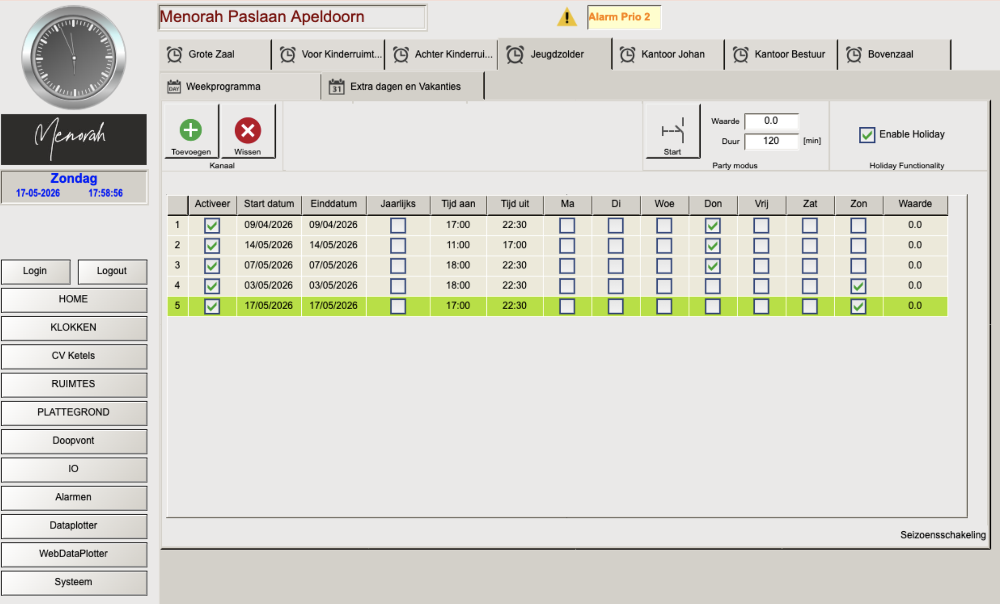
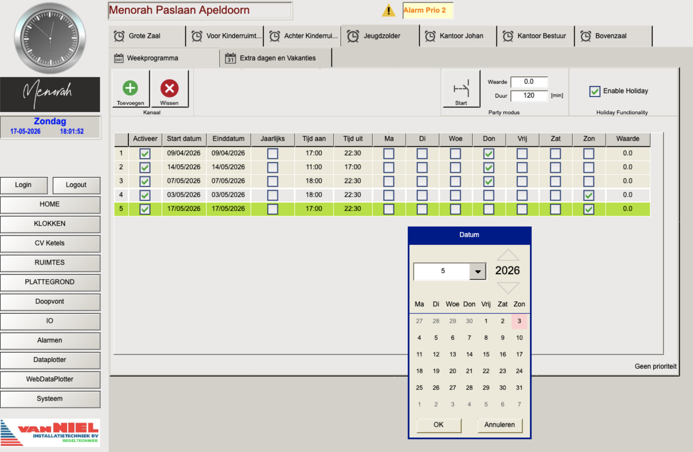
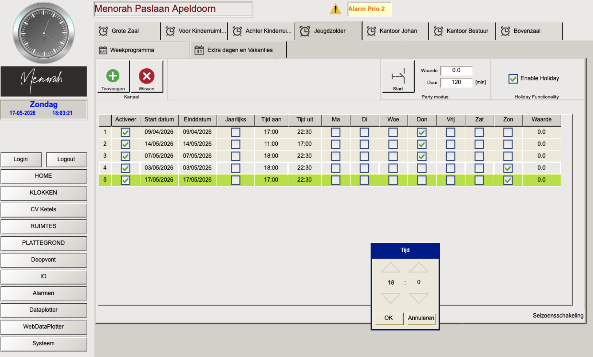

Het Klokken scherm is het belangrijkste scherm voor dagelijks beheer. Hier stel je in wanneer welke ruimte op temperatuur moet zijn. Het systeem berekent zelf hoe ver van tevoren de verwarming moet starten.
Hoe de regelcyclus werkt
"Tijd aan" geeft aan wanneer de ruimte op de gewenste temperatuur moet zijn. De ketel start automatisch eerder op basis van de buitentemperatuur en de opwarmgeschiedenis van de ruimte. Bij een koude ruimte of lage buitentemperatuur start de verwarming dus eerder.
Weekprogramma instellen
Elke ruimte heeft een eigen tabblad bovenaan het Klokken scherm. Per ruimte kun je meerdere tijdblokken instellen voor verschillende dagen van de week.
Navigatie
De beschikbare ruimtes zijn: Grote Zaal, Voor Kinderruimte, Achter Kinderruimte, Jeugdzolder, Kantoor Johan, Kantoor Bestuur, Bovenzaal. Klik op het gewenste tabblad om het weekprogramma van die ruimte te bekijken.

Een tijdblok toevoegen
- Ga naar het tabblad van de gewenste ruimte bovenaan het Klokken scherm
- Zorg dat de subtab Weekprogramma actief is (linker subtab)
- Klik op de groene Toevoegen knop — een nieuwe rij verschijnt onderaan de lijst
- Klik op het Tijd aan veld en stel het gewenste comfortmoment in via de tijdpopup
- Klik op het Tijd uit veld en stel het einde van de verwarmingsperiode in
- Vink de gewenste dagen van de week aan: Ma, Di, Woe, Don, Vrij, Zat, Zon
- Vink het Activeer vakje aan om het tijdblok te activeren
Overzicht kolommen weekprogramma
| Kolom | Functie | Opmerking |
|---|---|---|
| Activeer | Tijdblok aan- of uitzetten | Uitgevinkt = tijdblok bestaat maar is inactief |
| Tijd aan | Gewenst comfortmoment | Niet het starttijdstip van de ketel! |
| Tijd uit | Einde comfortperiode | Daarna terugval naar standby setpoint |
| Ma t/m Zon | Dagen waarop dit blok geldt | Meerdere dagen mogelijk per rij |
| Waarde | Heeft geen functie | Kan worden genegeerd |
Party modus (boost)
De Party modus is een directe override: de verwarming gaat onmiddellijk aan voor de ingestelde duur, ongeacht het klokprogramma. Handig als er een onverwachte activiteit is.
- Ga naar het tabblad van de gewenste ruimte
- Stel indien gewenst de Duur in (standaard 120 minuten)
- Klik op Start om de boost te activeren
Het setpoint dat wordt gebruikt is het comfort setpoint zoals ingesteld in het Ruimtes scherm.
Extra dagen en vakanties
De subtab "Extra dagen en Vakanties" is bedoeld voor eenmalige of jaarlijks terugkerende afwijkingen van het weekprogramma — zoals een extra kerkdienst op een doordeweekse dag, of een vakantieperiode.

Een actieve entry in "Extra dagen" schakelt het volledige weekprogramma voor die dag uit — ook tijdblokken die niet overlappen met de extra dag entry. Als er op een zondag zowel een ochtendkerkdienst (weekprogramma) als een avondprogramma (extra dag) is, wordt de ochtend NIET verwarmd. Voeg in dat geval ook het ochtendprogramma als aparte extra dag entry toe.
Een extra dag invoeren — stap voor stap
Bij een extra dag entry moet de dag van de week altijd handmatig aangevinkt worden, ook als die logisch af te leiden is uit de datum. Zonder aangevinkte dag werkt het programma niet en wordt de ruimte niet verwarmd. Dit is een bekend foutgevoelig punt.
- Ga naar het tabblad van de gewenste ruimte bovenaan het Klokken scherm
- Selecteer de subtab Extra dagen en Vakanties (rechter subtab)
- Klik op de groene Toevoegen knop — een nieuwe rij verschijnt
- Klik op het Start datum veld en stel de datum in via de kalender popup

- Klik op het Einddatum veld en stel in — zelfde dag voor eenmalig gebruik, meerdere dagen voor vakanties
- Klik op het Tijd aan veld en stel het comfortmoment in via de tijdpopup (uren aanpassen met ↑↓ pijlen)

- Klik op het Tijd uit veld en stel het einde in
- Vink de dag van de week aan ⚠️ — dit is verplicht, ook als de datum al correct is ingesteld
- Voor jaarlijks terugkerende dagen: vink Jaarlijks aan
- Vink het Activeer vakje aan
- Controleer of er geen conflicten zijn met het weekprogramma voor die dag
Overzicht kolommen extra dagen
| Kolom | Functie | Opmerking |
|---|---|---|
| Activeer | Entry aan- of uitzetten | Uitgevinkt = entry bestaat maar heeft geen effect |
| Start datum | Eerste dag waarop de entry geldt | Invoer via kalender popup |
| Einddatum | Laatste dag waarop de entry geldt | Zelfde als startdatum voor eenmalig gebruik |
| Jaarlijks | Herhaalt elk jaar op dezelfde datum | Handig voor vaste feestdagen |
| Tijd aan / Tijd uit | Comfortperiode | Zelfde betekenis als weekprogramma |
| Ma t/m Zon | Dag van de week | ⚠️ Altijd verplicht aanvinken, ook bij een specifieke datum |
| Waarde | Heeft geen functie | Kan worden genegeerd |
Enable Holiday
De knop "Enable Holiday" heeft momenteel geen functie en wordt in een toekomstige update verwijderd. Deze knop kan worden genegeerd.
Wanneer de ketel niet aanslaat (stookgrens)
Het kan voorkomen dat de verwarming niet aanslaat ondanks een actief klokprogramma. Dit heeft te maken met de stookgrens op basis van de buitentemperatuur.
Als het 3-daags gemiddelde van de buitentemperatuur boven 16°C ligt, gaat de ketel niet aan. Dit is een energiebesparende maatregel, maar zorgt voor problemen in het voor- en najaar als er een koude dag volgt op een warme periode. De instelling is aanpasbaar in het CV Ketels configuratiescherm (admin vereist).
Als u vermoedt dat dit het geval is, controleer dan in het CV Ketels scherm de waarden "Stookgrens Dag gemiddelde buitentemp" en "Aantal dagen gemiddelde buitentemp". Zie Hoofdstuk 4 — CV Ketels voor details.